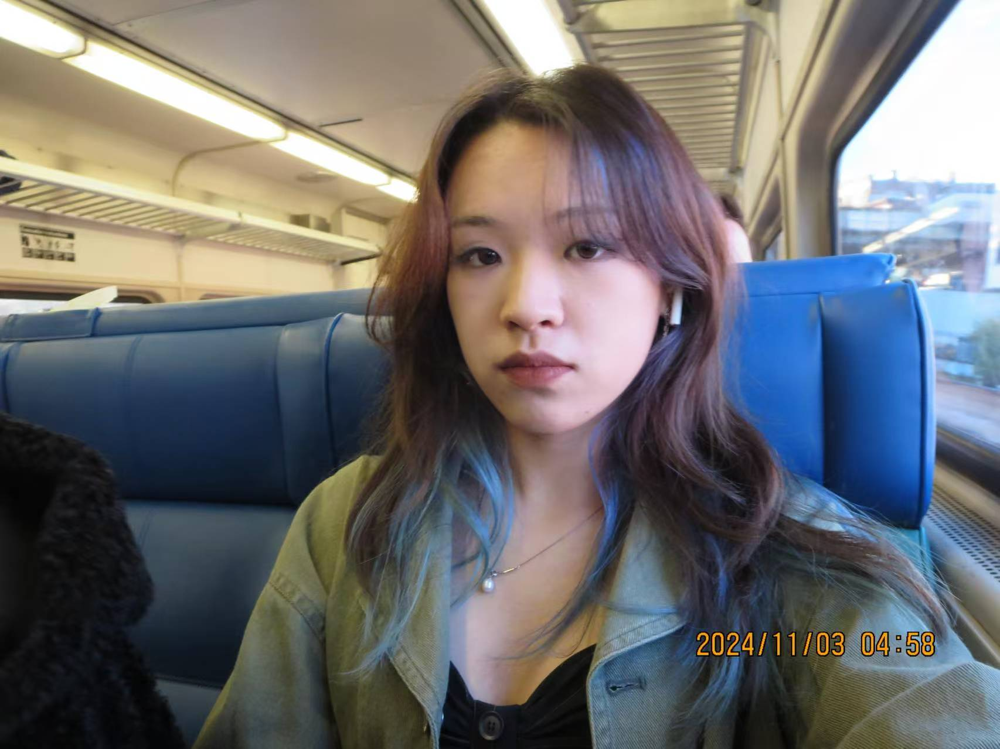

Hi, I'm Yiqi Chen, a Junior in Interactive Media Arts (IMA) at NYU.
I’m passionate about blending creativity with technology, and I’ve had the opportunity to explore various fields such as UI/UX design, front-end development, creative coding, and physical computing. My experiences have allowed me to work on diverse projects where I design, develop, and bring interactive ideas to life. I thrive on solving problems in innovative ways and am always excited to learn new technologies and techniques.
Feel free to explore my work and get in touch!
email: yc5965@nyu.edu